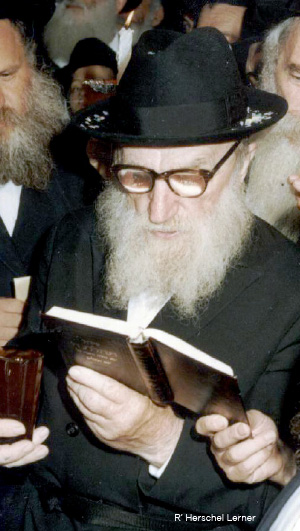
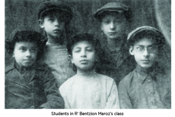

Risking His Life for a Fellow Jew
Stories and memories about the Chassid, R’ Herschel Lerner, recounted by his granddaughter and suffused with Chassidic flavor. * Part 4
LEARNING IN THE CELLAR

Every day my grandfather brought his son to yeshiva. He was very pleased that his son took to his studies to the extent that he was called “Yankele der masmid.”
There were a number of raids on this school. R’ Sasonkin was once arrested. Another time, the teachers and students were arrested as they learned. Subsequently, the school was closed. Some of the students switched to learning with R’ Shmuel Nodel in his house.
Other classes were held on 3 Denauskaya Street where R’ Bentzion Maroz learned with small groups of students. The family of R’ Eliezer Mishulovin lived in the same courtyard, as mentioned in the previous chapter, and nearly all Jewish activities clustered around them.
After a time, when things became more difficult as the government became more particular, the school moved to the cellar of a house where R’ Bentzion continued to devotedly teach. The cellar was under the building where the Mishulovins lived. The talmidim were scared but my grandfather urged them all to continue learning. He constructed sleds and used them to bring the children to school.
The school consisted of two classes. In the first class learned Moshe Lerner, Itche Mishulovin, and Bentzion Goldschmidt. In the second class learned Mordechai Goldschmidt, Hillel Zaltzman, Michoel Mishulovin, and Yaakov Lerner. There was also a group of older boys which included Leib Schiff and Yosef Segalovitz. R’ Maroz was mekarev some boys who were less connected to Chabad from the Estrelis, Portnoy, Nayuma and Kosoi families.
Despite the fear and constant surveillance, the talmidim continued to learn every day. They were well trained in the event of an unexpected inspection. When they heard that a policeman was walking about outside, they quickly implemented their getaways.

ABSENCES FROM PUBLIC SCHOOL
My grandfather was constantly in touch with the Mishulovin, Zaltzman and Goldschmidt families. There were no secrets among these families and their close ties persisted every day of the year, whether holiday, Shabbos, or weekday. They all consulted with one another about topics such as chinuch, children, setting times to learn Torah, and matters of parnasa too.
In 5707, along with attending yeshiva, the children were sent to public school, since parents had no choice. My grandfather did not like (an understatement) the fact that his children had to attend public school and he wanted to find a way to avoid this. He had arguments with my grandmother about this. She was afraid this would cause her husband to be arrested again. She maintained that the families he was close with had not gone through the misery of being arrested and that is why they were not so nervous.
In the end, all the children, except for the Mishulovin boys, began attending school in some fashion or another. Some went a few months later, some earlier. They were dispersed among various schools that were far from one another. This was so that the behavior of these students wouldn’t stand out. The children who went to the yeshiva stood out in their attire and manner. They did not speak in class, they did their homework on time, and they did not use foul language.
The main difference from the rest of the students was in their regular absences on Shabbos and Yom Tov. Each school was chosen based on what would make it easiest for the children to absent themselves on Shabbos and Yom Tov and in general, to cover the peculiar behavior of the religious children as compared to the rest of the student population. The assumption was that the principals and teachers would have bigger problems dealing with the “darlings” who attended public school and would leave alone these well-behaved, quiet children whose only “misdemeanor” was being absent on Shabbos.
However, many problems arose due to their absence from school on Shabbos and Yom Tov. Yud-Tes Kislev was also one of those days that it was felt was not appropriate for them to spend in public school.
There were many schools in the city that were on various levels. My grandfather wanted to place the children in several schools so their absences wouldn’t be noticeable. Yaakov was sent to public school #26, a school known for its large number of marginal youth. The reason for sending him there was that those types of boys were absent a lot and Yaakov’s absences wouldn’t stand out.
Throughout the week, the boy and his parents were tense as Shabbos approached. My grandfather took upon himself the task of coming up with excuses for the absences. He ran from doctor to doctor, bribed the teachers, and sought to appease them and divert their attention.
THE BAR MITZVA CELEBRATION THAT WAS CANCELED AND THEN TOOK PLACE
In 5712, my grandfather became a partner in a paint factory. It was a small business which had a few workers that sold paint to the government. Within a year, the business expanded nicely and was able to support two families, Lerner and Katz.
R’ Dovid Katz was under investigation from the government but grandfather was unaware of this. Once they began following Katz, they began following my grandfather too, since he was close with Katz.
On the day of my father Yaakov’s bar mitzva, they planned for some people to come to the house in order to celebrate the great day in a low-key fashion. They bought six bottles of beer and my grandmother cooked some dishes. They all looked forward to the celebration.
That morning, a short man with a serious demeanor appeared and asked, “Where is Gregory Solomonovitz? Do you know Katz?” My grandmother said he worked with my grandfather. The man began interrogating her about where he lived and his work hours, etc. The man said he was from the police and said he was checking information about him. Yaakov intervened and said his father only knew him from work. My grandmother quickly hushed him lest he say something he shouldn’t.
When the man finally left, the house was in turmoil. They alerted my grandfather who immediately went to the factory in order to warn Katz. When he got there he met the same KGB agent. The agent tried to extract information about him but my grandfather consistently maintained that he had none. The agent insisted and even brought my grandfather to the black KGB car and said, “Let us take a drive around the city. Sometimes people remember …”
When my grandfather returned home, my grandmother began removing from the house the refreshments that had been prepared for the bar mitzva so that if someone unwanted would come, there wouldn’t be additional reasons for interrogation. This action was also carried out in fear that they would discover that something unusual was going on.
In the meantime, my grandfather found his friend Katz and quickly took him out of the city. The next day, the agent came back to the business for the purpose of finding Katz, but he wasn’t there. The agent fixed his terrifying gaze upon my grandfather and asked, “Did someone tell him I was here?” My grandfather said, “I don’t know.” For an entire week my grandfather was called for interrogations and the house was under constant surveillance.
The bar mitzva celebration was postponed to some unknown time. R’ Yosef Schiff, the one appointed over all small factory operations in the area and who was reliable and a distinguished man in the community, had pity on Yaakov who hadn’t had a bar mitzva celebration. By way of compensation, he promised that they would celebrate the following Shabbos.
Indeed, despite the goings-on, my grandfather did not forgo a single detail of the bar mitzva celebration. On Shabbos Parshas Shmos, Yaakov read the Haftora. R’ Avrohom Yosef Antin had prepared the Haftora with him.
Davening was generally done in secret since entry to the official shul was allowed only to those over sixty, but the bar mitzva was done in the official shul on Denauski Street anyway. Despite the great fear, everyone went to shul in my grandfather’s honor.
On the following Shabbos, Parshas VaEira, they gathered for a farbrengen celebration in the home of R’ Yisroel Frankel. The house was full of guests and that is where they farbrenged and celebrated the bar mitzva.
To be continued, G-d willing
Beis Moshiach (staff). "Risking His Life for a Fellow Jew." Beis Moshiach, no. 909 (December 30, 2013).